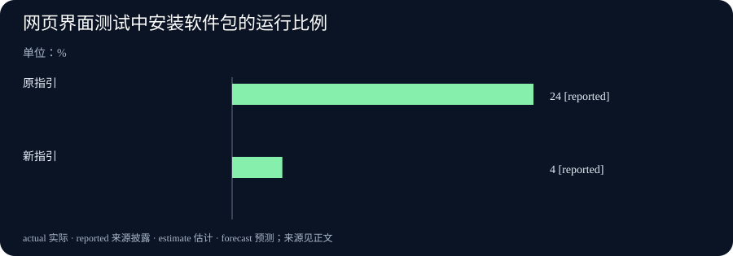

Daily Intelligence · 2026-11-15
信息边界 研究截止于北京时间 2026 年 11 月 15 日 07:04:11，优先查找自 11 月 14 日 07:04:11 起新公开的材料。商务部原文发表于北京时间 14 日 14:33，所述会议发生在 13 日。Factory 与东盟协议的政府材料标注 14 日，发布小时未披露。Agent Skills 的发布页显示 14 日 04:33，页面读取结果未给出时区。后三项按来源日期采用，严格的 24 小时归属未获证实。
Today's Thesis
让技术真正进入日常工作，需要把责任写进具体步骤。两款人工智能编程工具更新了工具调用记录和验证办法。东盟签署数字经济协议，中美贸易理事会举行首次会议。对企业来说，下一步要看可执行的变化，比如系统能否识别另一国的单据，或海关何时能按新的税率放行商品。
Executive Summary
Factory 更新了 Droid 编程助手。在工作记录里，用户能看出助手调用了哪一类工具，也能在撤销服务账号密钥后查到组织的审计记录。开源项目 Agent Skills 则改写了给编程助手的工作指引，要求先用项目已有的验证工具。项目作者在三项界面任务中记录到，安装软件包的运行比例由 24% 降至 4%。
东南亚国家联盟在马尼拉签署《数字经济框架协议》。签字确认了成员国同意推进的框架。协议仍需走完生效程序。新加坡和印度尼西亚分别列出了可能先推进的用途，包括跨境支付和电子贸易单据。
中国商务部公开了中美贸易理事会第一次会议的情况。双方谈及关税、针对对等降税的安排及农产品贸易。会议通报给出了议题和继续沟通的方向。做跨境生意的企业还需要等到商品范围、适用税率和执行日有正式文件可查，才能用来更新成本。
AI Daily
Factory 让人看清编程助手用了哪个工具
Factory 发布 Droid 1.12.0，涵盖在终端里输入命令的版本和桌面应用。更新之后，操作记录会同时显示工具来自哪里和执行了什么。例如，读一份文件的能力可能来自助手自带的命令，也可能来自它接入的外部工具。用户现在能看到这两种来源，排查时也更容易回到对应的设置。模型上下文协议（MCP）是助手连接外部工具的一种通用方式，这类调用也会显示来源和具体用途。 Factory 11 月 14 日更新记录
这次也改变了部分操作的风险分类。向共享代码仓库普通推送或发起代码合并请求，现归为中等风险。能覆盖远程提交历史的强制推送仍属于高风险。风险级别会作为产品区分操作的依据，实际是否放行还要看团队和用户的设置。另一项改动是撤销服务账号密钥会写入组织审计记录。服务账号是给程序使用的身份。管理员此后可以从记录追查这次撤销操作。
Factory 还修复了切换账号后组织设置可能保存到另一个账号的问题，以及刚切换账号就开启新会话时可能使用错误身份的问题。对轮换多个客户或组织账号的开发者，测试新版时，最实际的是用测试账号核对新会话和设置都归到正确组织，再查看工具记录能否帮助复盘。发布记录描述了产品行为的改变，实际错误率和团队节省的排查时间没有公开测量值。
Agent Skills 让助手先用项目已有工具检查页面
Agent Skills 是一套开源工作指引。团队可以把这些指引交给编程助手，用来安排需求说明、实现、测试和代码审阅等步骤。0.6.16 版更新了网页界面的验证办法。助手可以运行项目原本就有的测试、代码规范检查或类型检查。若项目缺少相应工具，指引要求按清单检查，并说明哪些测试本次无法运行。这能减少助手为了检查一次改动就给项目额外安装一套工具的情况。 0.6.16 正式发布说明
新版本也允许给已经上线的功能单独写一份简短的变更说明，保留原先的需求记录。自动构建流程会核对执行计划是否来自对应的说明。这项改动适合已经有明确需求文档的项目。若文档没有写清现有功能，团队仍需补齐信息，助手才能知道改动应该做到哪里。
项目贡献者用 11 个模型试做下拉菜单、对话框和标签页三项任务，让另一个模型评分。采用新指引后，安装软件包的运行比例从 24% 降到 4%。其中两项任务由贡献者新写，并且参与了此次改动的检验，所以这组结果只描述这次实验。项目也报告，新指引与完全不加载这套指引的得分接近，两者的对照批次时间不同。现有证据支持团队先验证意外安装是否减少。项目是否能长期少出错，仍需更多项目和任务的结果。 贡献者的实验设计与结果
Business Daily
东盟签署数字经济协议，跨境系统互认还需落地
11 月 14 日，东南亚国家联盟（东盟，ASEAN）成员国在菲律宾马尼拉签署《数字经济框架协议》（DEFA）。新加坡副总理兼主管贸易的部长颜金勇会后确认签字已经完成。他提到可以着手准备的项目，包括数字支付、用来在线确认身份的数字身份，以及电子贸易单据。他希望协议能在 2027 年初生效，具体生效时间仍待确认。 新加坡能源与贸工部会后实录
印度尼西亚经济事务统筹部同日表示，本国将优先推进批准程序、准备国内规则，以及协调负责执行的部门。该部门以电子签名和跨境扫码支付为例。电子签名只有得到接收方承认，企业才有机会减少纸质流程。印尼还希望推动本国二维码支付标准与更多伙伴市场连接。现有连接的适用范围仍须逐个核对，企业也要等参与机构公布上线范围。 印度尼西亚经济事务统筹部公告
举例来说，一家小出口商即使能在线签发单据，也要确认进口一侧认哪种签名和单据格式。如果双方平台都通过核验，再看系统是否能把同一份原始信息交给海关和银行，以及错误能否退回更正。这些问题会直接影响企业要重复填写多少信息。签字之后的观察对象因此很具体，可以查先参与的国家、单据与支付项目，以及旧流程在何时会真正简化。
中美贸易理事会公布首次会议议题
商务部新闻办公室 11 月 14 日通报，中美双方在 13 日通过视频开了贸易理事会的第一次会议。它是两国经贸磋商机制下的沟通渠道。这次双方讨论关税、“300 亿对 300 亿”对等降税安排和农产品贸易，并表示会通过理事会继续沟通。通报没有列出新税率、具体商品或实施日期。对于依赖农产品进口许可或关税的企业，可确认的新进展是议题进入这个渠道，现有报价仍要按已生效的规则计算。 商务部新闻办公室会议通报
Macro Observation
两项经贸消息对应不同的实施阶段。东盟已经完成协议签字，之后要观察各国批准和第一批实际连通的系统。中美贸易理事会首次开会，之后要观察是否有可供企业执行的税目和流程。即使这两条线都有进展，短期贸易量还会受需求、运费和汇率左右。协议、会议和商品实际成交，各有自己的证据。
读贸易政策时，也应区分数字说的是哪一层。议题里的对等降税安排是正在讨论的内容。它没有给出单个企业能享受的减税额。东盟数字贸易协议希望推动支付和单据互通，先签协议也无法据此估算各国商户能增加多少销售。下一次看到贸易或投资数据变化，可以先问观察期是否覆盖新规则生效日，再看行业、国别和商品分项是否支持这条解释。
Signal Dashboard
- 已发布的软件改动。 Droid 1.12.0 增加工具调用来源、撤销服务账号密钥的记录，并修复切换账号的相关问题。实际调用权限仍由各组织的设置控制。
- 有限范围的测试结果。 Agent Skills 的实验显示，在指定任务和评测设置下，加载新指引后较少安装软件包。测试覆盖的任务少，团队可先用自己的旧项目复测。
- 已签署的地区协议。 东盟数字经济协议进入批准和准备执行的阶段。何时生效、哪些项目先开通，仍需参加国公布。
- 新披露的谈判进展。 中美贸易理事会首次会议已经举行。商品范围、具体税率和执行条件仍要查后续正式文件。
Deep Insight
软件更新能否减少返工，要看哪里留下记录
编程助手常常需要做多种事。它要读取文件、编辑代码、访问外部系统，也可能把代码推送到团队仓库。这些动作有时出现在同一份报告里。如果报告只写“检查通过”，接手者仍不知道用了哪个工具，也不容易看出代码最后停在谁的账号或什么环境中。一次出错就可能让两个人分别重走同一遍流程。Factory 把工具来源和动作显示出来，为接手者补了一块信息。但记录能否用于追查，仍取决于日志粒度、团队保留记录的方式，以及关键身份有没有和某次操作对应起来。最值得测的是出错后能否凭记录找回故障发生的那一步。
另一种返工来自验证办法本身。项目里原本没有自动测试时，助手临时装上框架，很可能已经改变了它正准备检查的环境。反过来，一味沿用项目旧工具，也可能遗漏网页菜单是否能用键盘操作等新需求。Agent Skills 给出的办法是先运行已有检查，再告诉用户还有哪一步无法验证。这使接手的人能判断缺失的是工具、测试用例还是证据。贡献者的实验观察支持少装软件包这一点，也有清楚的疑问。三类界面能否代表更多工作，作者知道这些任务后是否写出了对它们更有利的指引，以及换团队以后该怎么评分，都需要独立检验。
跨境贸易有类似的返工成本，但它需要多个机构一起解决。出口国的系统可以识别电子签名，进口国的海关和银行还要知道签发方是谁、这份单据是否更新过，以及遇到争议该找谁。任一方做不完核验，小企业就可能同时跑电子和纸质两套流程。因此，东盟签署协议的价值可以从第一批明确承认的单据或支付连接开始跟踪。等企业可以比较用时、费用和纠错次数，才有条件判断框架怎样改变交易。中美贸易理事会的任务不同，但读者同样能从正式规则查到谈判结果。税目编号、申报时适用的日期和海关的填单说明，都会留下可核实的痕迹。
由此可以提出一个具体的检验办法。选择一项过去经常返工的任务，例如接续一个失败的编程会话，或者为一票商品补交单据。把过程拆成找记录、确认身份、重做或补交三个动作，然后数清哪些动作有证据可复核。只要有一方还得打电话、重新登录或另查一份纸质材料，节省的时间就不能提前填进结果。没有量化数据时，先把观察对象写清楚，也能够避免把一场会、一次软件更新和一次实际收付当成同一类进展。
Tomorrow Watch
- 看马尼拉后续会议是否公布东盟数字协议的完整生效条款、已点名的第一批合作项目或各国批准时间。不确定的日期按计划跟踪。
- 看中美贸易理事会相关机构是否公布磋商日程、可核查的商品清单或海关执行说明。可以先找原文中的税目编号与适用日期。
- 看两套编程工具的用户能否重现更少返工的结果。特别留意切换账号后还原会话、查到撤销密钥的记录，以及没有测试框架时助手如何交代验证边界。
One Chart
网页界面测试中，修改指引前后安装软件包的运行比例

单位为百分比。原指引为 24%，新指引为 4%，相差 20 个百分点。两条都标为 reported，表示项目贡献者披露的试验结果。比较来自 11 个模型在下拉菜单、对话框和标签页三项任务的运行。安装比例以测试运行为分母，不能用来估计使用这类助手的所有团队一年能节省多少时间。 贡献者发布的比较表和方法说明
Quote of the Day
We shape our buildings and afterwards our buildings shape us.
我们塑造建筑，随后建筑也塑造我们。
Winston Churchill（温斯顿·丘吉尔），1943 年 10 月 28 日在英国下议院讨论重建议事厅时的发言。旧议事厅在 1941 年的空袭中被毁。他主张恢复议事厅的主要特征，并以座位布局为例说明空间怎样影响辩论。 英国议会 Hansard 当日发言记录
编辑解读 工作界面也会影响人如何判断一件事是否办完。工具把调用来源显眼地显示出来，人更容易在交接时追问证据。界面只能帮助形成这个习惯，团队还要定义遇到异常时查哪些原始记录。
Action Items
- 工具调用能追到哪里？ 在一个可重复的任务中选一次外部工具调用，核对记录能否追到工具、动作和使用的账号。
- 助手检查时添了什么？ 比较验证前后的项目文件和依赖。若出现临时安装，记录它解决了哪个问题，并确认这些改动是否要保留。
- 哪个跨境环节仍需手工？ 挑一条实际交易路线，写出付款和交单的各个步骤。等官方公布新项目时，核对具体减少的是哪一步。
- 新税率有可以引用的依据吗？ 用一个常见商品作样例，对照税号、官方公告与执行日期，再决定报价需要何时更新。
- 一轮试验的结果能复现吗？ 选择一个原有项目，用相同任务对照两种验证说明，记录意外安装、检查遗漏和需要人工复核的次数。